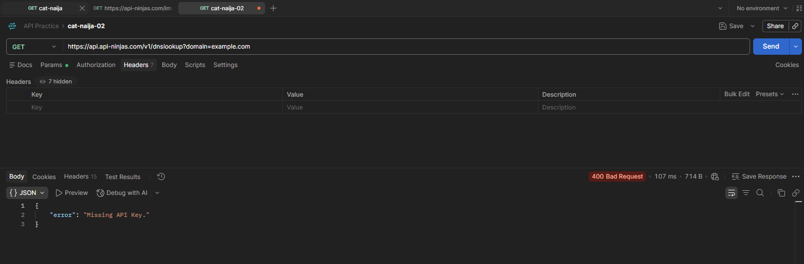
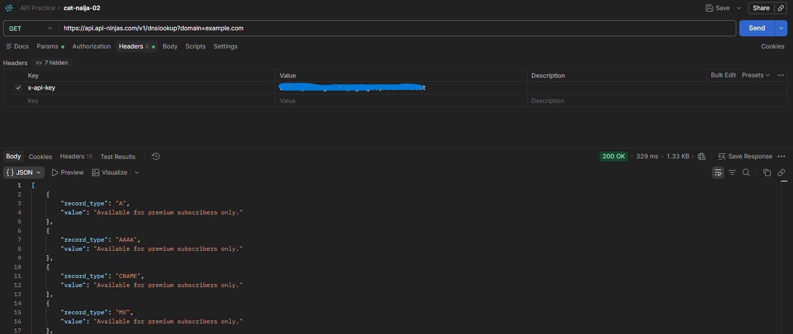
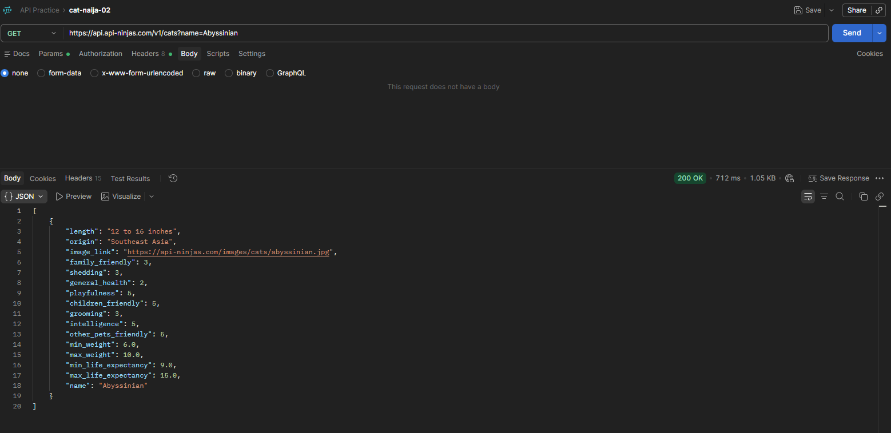
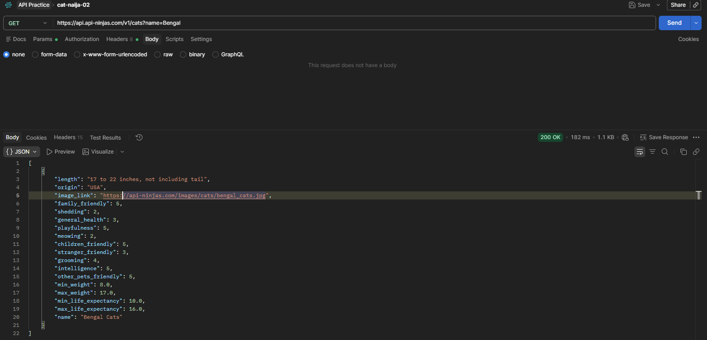
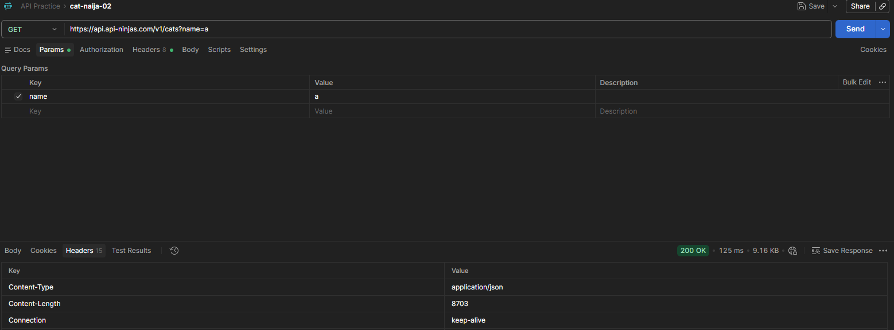
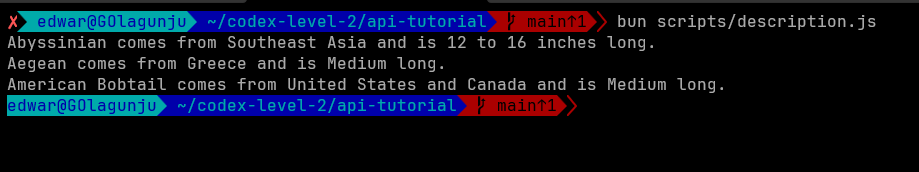
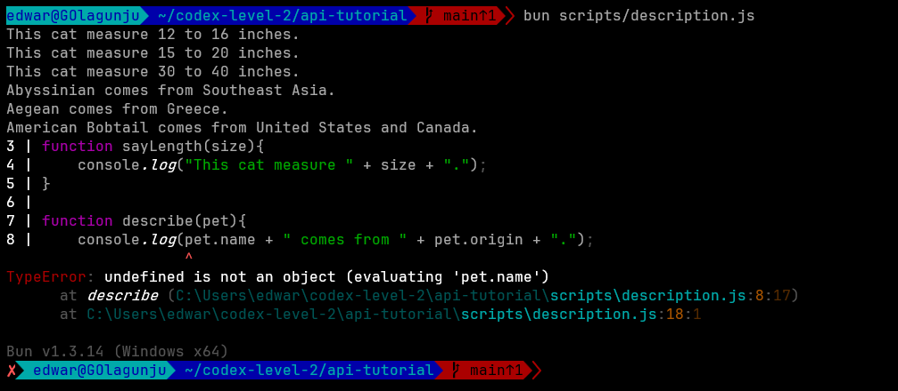
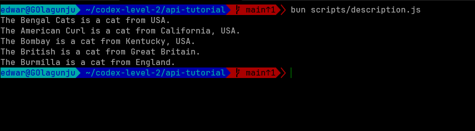
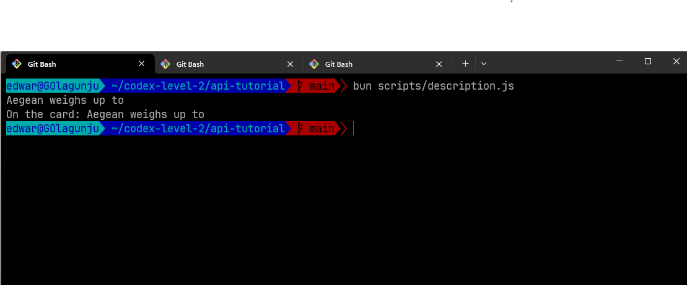

All About APIs!
Day 4Step 1 — The URL is the request


I tested the Dog API by requesting a random dog image, then formatted the returned JSON to make it easier to read.
{
"message": "https://images.dog.ceo/breeds/hound-afghan/n02088094_2062.jpg",
"status": "success"
}Here are some more dogs


Step 2 - API Key and Status Code


As I worked through the exercises,I tried the request without the API key and received a 400 response. After adding the API key to the request header, the API returned a 200 response.
Step 3 - Query Parameters Change the Response


Today, I worked on changing a query parameter can change the information returned by the same endpoint. I tested different parameter values in Postman and compared the responses.
{[
{
"length": "12 to 16 inches",
"origin": "Southeast Asia",
"image_link": "https://api-ninjas.com/images/cats/abyssinian.jpg",
"family_friendly": 3,
"shedding": 3,
"general_health": 2,
"playfulness": 5,
"children_friendly": 5,
"grooming": 3,
"intelligence": 5,
"other_pets_friendly": 5,
"min_weight": 6,
"max_weight": 10,
"min_life_expectancy": 9,
"max_life_expectancy": 15,
"name": "Abyssinian"
},
[{
"length": "17 to 22 inches, not including tail",
"origin": "USA",
"image_link": "https://api-ninjas.com/images/cats/bengal_cats.jpg",
"family_friendly": 5,
"shedding": 2,
"general_health": 3,
"playfulness": 5,
"meowing": 2,
"children_friendly": 5,
"stranger_friendly": 3,
"grooming": 4,
"intelligence": 5,
"other_pets_friendly": 5,
"min_weight": 8,
"max_weight": 17,
"min_life_expectancy": 10,
"max_life_expectancy": 16,
"name": "Bengal Cats"
}]
]}
Step 4 - Saving an API Response

Today's practice helped me on how to save the response from Postman as a JSON file and use it in my JavaScript code. Mypet-cats.json file contains
the actual cat data returned by the API, which I imported into
description.js.
{{
"length": "Medium",
"origin": "United States and Canada",
"image_link": "https://api-ninjas.com/images/cats/american_bobtail.jpg",
"family_friendly": 4,
"shedding": 4,
"general_health": 4,
"playfulness": 4,
"meowing": 3,
"children_friendly": 4,
"stranger_friendly": 4,
"grooming": 3,
"intelligence": 4,
"other_pets_friendly": 4,
"min_weight": 8.0,
"max_weight": 13.0,
"min_life_expectancy": 11.0,
"max_life_expectancy": 15.0,
"name": "American Bobtail"
},}
Step 5 - Using JSON in JavaScript
I learned that I can access individual records from a JSON array using an index.
I used CatData[0].name to get the first cat's name and CatData[0].shedding to get its shedding
level.
{import CatData from "../pet-cats.json";
console.log("Hello World!");
// The first cat
console.log("The " + CatData[0].name + "'s shredding level is " + CatData[0].shedding + ".");
// The second cat
console.log("The " + CatData[1].name + "'s shredding level is " + CatData[0].shedding + ".");
// The third cat
console.log("The " + CatData[2].name + "'s shredding level is " + CatData[0].shedding + ".");}
Step 6 - Passing JSON Data to a JavaScript Function
Today, I worked on how to pass individual objects from a JSON array into a JavaScript function

import pets from "../data.json";
function describe(pet){
console.log(pet.name + " comes from " + pet.origin + " and is " + pet.length + " long.");
}
describe(pets[0]);
describe(pets[1]);
describe(pets[2]);
Step 7 - Understanding undefined & TypeError
I learned what happens when a JavaScript function is called without the argument it expects.When no value is provided,the parameter become undefined.

import pets from "../data.json";
function sayLength(size){
console.log("This cat measure " + size + ".");
}
function describe(pet){
console.log(pet.name + " comes from " + pet.origin + ".");
}
sayLength("12 to 16 inches");
sayLength("15 to 20 inches");
sayLength("30 to 40 inches");
describe(pets[0]);
describe(pets[1]);
describe(pets[2]);
describe();
Step 8 - Passing Two Parameters
Today's practice helped me that a JavaScript function can accept more than one parameter. When the function is called, each argument is passed to its matching parameter in the same order.

import pets from "../data.json";
function introduce(breed,origin){
console.log("The " + breed + " is a cat from " + origin + ".");
}
introduce("Bengal Cats", "USA");
Step 9 - Returning a Value from a Function
I learned that a function can return a value using the returnstatement.The required value can then be stored in
a variable and used outside the function

import pets from "../data.json";
function introduce(breed, origin){
console.log("The " + breed + " is a cat from " + origin + ".");
}
function weightLine(pet) {
let line = pet.name + " weighs up to ";
console.log(line);
return line;
}
let sentence = weightLine(pets[1]);
console.log("On the card: " + sentence);